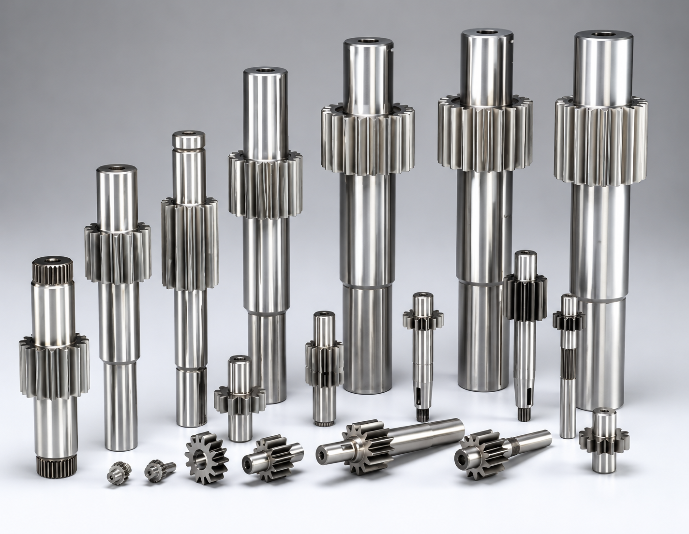

Industrial Shafts & Turned Components Manufacturer
Industrial shafts and turned components supplied from India for machine builders, pump manufacturers, OEMs, and industrial buyers.
Request Quote
Manufacturing Capabilities
| Specification | Details |
|---|---|
| Product | Industrial Shafts |
| Manufacturing Process | CNC Turning, Grinding, Milling |
| Materials | EN8, EN19, EN24, SS304, SS316, Alloy Steel |
| Diameter Range | As per drawing |
| Length Range | As per drawing |
| Tolerance | As per customer specification |
| Surface Finish | Ground / Machined / Polished |
| Heat Treatment | Available on request |
| Inspection | Vernier, Micrometer, Height Gauge, CMM (if required) |
| Packaging | Export Worthy Packaging |
| Export Markets | Worldwide |
Custom manufacturing available as per customer drawings and specifications.
Built for International Buyers
Our shafts and turned component supply is suitable for pumps, motors, machines, automation systems, industrial assemblies, and OEM applications.
How We Handle Your Order
We confirm dimensions, tolerance, material, heat treatment, and finish.
Suitable turning vendors are selected based on capability.
Pricing is prepared based on material, machining, tolerance, and quantity.
Manufacturing is coordinated as per approved drawing.
Dimensional inspection support is arranged as required.
Packing and shipment support is coordinated.
Frequently Asked Questions
Can you supply custom shafts?
Yes, custom shafts can be supplied based on buyer drawings or samples.
Can heat treatment be arranged?
Heat treatment can be coordinated if required in the drawing or specification.
Which buyers use these parts?
Machine builders, pump manufacturers, OEMs, automation companies, and industrial buyers commonly use shafts and turned components.
Request a Quote for Industrial Shafts & Turned Components Manufacturer
Share your drawing, material, tolerance, quantity, heat treatment requirement, and delivery destination. Our team will respond with suitable sourcing and export options.
Request Quote